Questão 1 · Tratamento · Dermatologia · Diagnóstico · 4000181621Você está atendendo uma criança de 6 anos com queixa de lesões de pele, com prurido intenso, que ocorre principalmente à noite, há alguns dias. O paciente não apresentou febre ou qualquer outro sintoma. As lesões são papulovesiculares eritematosas, localizadas em espaços interdigitais, axilas, punhos, regiões glútea e genital. Os pais estão presentes na consulta, e a mãe refere os mesmos sintomas, com lesões semelhantes, mas com presença de lesões em túnel. O pai está assintomático e sem lesões. Qual é a conduta adequada em relação ao paciente e aos seus pais?
A Prescrever tratamento para a criança e para os familiares, independentemente da presença de sintomas.
B Prescrever o tratamento para a criança e para os familiares sintomáticos.
C Prescrever o tratamento apenas para a criança, que é sua paciente.
D Prescrever o tratamento para a criança e para a mãe.
E Prescrever o tratamento para a criança e indicar avaliação com dermatologista para a mãe.
Questão 2 · Dermatologia · Intertrigo por cândida · Candidíase · 4000181379Lactente, 1 ano, vem à consulta de puericultura com queixa de lesão avermelhada em dobra anterior do pescoço há 2 semanas. Nega febre. Nega casos semelhantes na família. Ao exame: presença de lesão eritematosa em face anterior do pescoço com algumas lesões satélites, conforme figura a seguir. Conferir figura correspondente com melhor resolução no anexo (FIGURA) Qual é o diagnóstico mais provável?
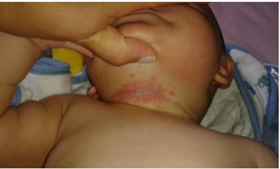
A Tinea corporis.
B Dermatite seborreica.
C Dermatite de contato.
D Intertrigo candidiásico.
Questão 3 · Tratamento · Dermatologia · 4000168988Um paciente de 4 anos de idade foi levado a o pronto atendimento por apresentar lesões pruriginosas há um mês. Ele apresenta micropápulas eritematosas em abdome e em membros superiores. O prurido piora à noite e agora o irmão de dois anos de idade também está começando a apresentar lesões semelhantes. Considerando o caso clínico apresentado e os conhecimentos médicos correlatos, o tratamento indicado é
A corticoide tópico,
B analgésicos,
C hidratação da pele,
D antibiótico tópico,
E permetrina 5%
Questão 4 · Dermatologia · Apresentação clínica · 4000168987Um paciente de 4 anos de idade foi levado a o pronto atendimento por apresentar lesões pruriginosas há um mês. Ele apresenta micropápulas eritematosas em abdome e em membros superiores. O prurido piora à noite e agora o irmão de dois anos de idade também está começando a apresentar lesões semelhantes. Considerando o caso clínico apresentado e os conhecimentos médicos correlatos, a principal hipótese de diagnóstico é o (a)
A prurigo estrófulo.
B escabiose.
C doença mão-pé-boca,
D impetigo.
E dermatite atópica.
Questão 5 · Pitiríase versicolor · 4000167484Mulher de 30 anos, sem doenças prévias, vem à consulta devido a máculas em região dorsal há 3 semanas. Relata que são lesões brancas, descamativas e não pruriginosas. Nega dor local. Não notou nenhum fator desencadeante e não tem feito uso de qualquer medicação. Ao exame, apresentam-se como máculas de descamação na, hipocrômicas, ovaladas, de cerca de 0,5 cm, distribuídas na região posterior do tórax da paciente. Não apresenta alteração de sensibilidade local. O raspado da lesão, preparado com hidróxido de potássio a 10%, mostra leveduras e pseudo-hifas curtas e septadas, semelhantes a cachos de uvas. O tratamento desta entidade pode ser feito com
A talidomida.
B fluconazol.
C prednisona.
D rifampicina.
E deltametrina.
Questão 8 · Tratamento · Apresentação clínica · 4000166516Lucia é uma auxiliar de serviços gerais que mora em uma casa de madeira num terreno de invasão. Tem 5 lhos entre 2 e 10 anos de idade. Quando sai para trabalhar deixa os filhos na casa da vizinha, pois não tem quem olhe as crianças durante o dia. A vizinha mora ao lado e tem animais de estimação. Há duas semanas a menina de 4 anos vem queixando de prurido intenso que atrapalha muito à noite, não a deixando dormir. A mãe notou lesões polimorfas eritematosas, algumas com aspectos de micropapulas e outras vesicopapulas com crostas em cima, algumas linhas sinuosas. Essas lesões estavam entre os dedos das mãos e pés, cotovelos, axila, coxas e nádegas. Considerando a principal hipótese diagnóstica pela história e lesões descritas, o melhor tratamento seria:
A Hidrixizine via oral
B Hidratante corporal com ureia
C Permetrina creme 5%
D Corticoide tópico
Questão 9 · Larva migrans · 4000166299Homem, 25 anos de idade, apresenta lesões lineares salientes e eritematosas no pé direito há 2 semanas. Qual é o diagnóstico mais provável?
A Tungíase.
B Cercariose.
C Ancilostomose.
D Miíase.
Questão 10 · Dermatologia · Tinea crural · 4000165552Homem de 28 anos de idade refere há 1 mês lesões pruriginosas nas virilhas. Ao exame clínico observa-se eritema e descamação nas regiões inguinais. O exame micológico direto foi positivo para hifas artrosporadas. Qual é o diagnóstico?
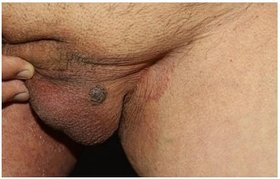
A Tínea negra.
B Tínea crural.
C Candidose.
D Piedra branca.
Questão 11 · Intertrigo por cândida · 4000165044Adolescente, 16 anos de idade, chega à UBS com quadro de poliúria há, aproximadamente, 40 dias. Refere fadiga frequente, o que atribui ao aumento de peso, durante a pandemia. Nega febre, disúria e outros sintomas. Ao exame, IMC: 29kg/m²; acima do 95° percentil; bom estado geral, eupneica, hidratada, afebril, corada. Apresenta eritema macular hiperemiado sob ambas as mamas, pruriginoso. O exame de urina I mostra: pH: 7,2; Densidade: de 1,01; Ausência de cetonas, bilirrubina, urobilinogênio, sangue e nitrito; presença de glicose ++; raros leucócitos e raras células epiteliais. Glicemia em jejum foi de 100mg/dL Indique a principal suspeita diagnóstica para as lesões de pele da paciente.
A Intertrigo por cândida.
B Impetigo.
C Acantose nigricans.
D Acne hormonal.
Questão 12 · Tratamento · Escabiose · 4000164990Menina, 5 anos, apresenta história de prurido intenso, principalmente noturno. Pai e irmão com sintomas semelhantes. Mãe assintomática. Exame físico: lesões cutâneas pápulo-eritematosas, algumas recobertas com crostículas, localizadas em região de punhos, braços, axilas, tronco e glúteos. Considerando-se a hipótese diagnóstica mais provável, a conduta mais adequada é:
A prescrever prednisona, dose 0,5mg/kg/dia, por 5 dias, somente para a paciente
B realizar biópsia de pele com envio do material para exame anatomopatológico
C iniciar ivermectina oral (200mg/kg) para a paciente e os contactantes sintomáticos
D iniciar permetrina 5% creme para a paciente e todos os contactantes domiciliares
Questão 13 · Tinea corporis · 4000164293Homem, 44 anos, portador de diabetes mellitus tipo 2 há 5 anos, em insulinoterapia, sem outras comorbidades. Há 2 meses, relata aparecimento da lesão no antebraço com prurido associado ( figura). Baseado na principal hipótese diagnóstica, realizou-se um exame complementar. Qual é o achado mais provável?
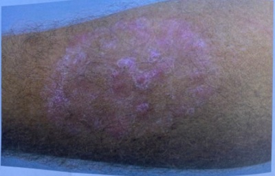
A Dermatite psoriasiforme.
B Elevação da imunoglobulina E.
C Hifas septadas ramificadas.
D Epidermotropismo de linfócitos.
Questão 14 · Tratamento · Dermatologia · Apresentação clínica · 4000163677Paciente lactente de 1 ano e dois meses foi levado ao ambulatório de Puericultura com quadro de lesões papulares eritematosas pruriginosas e vesi antebrac corporal há 3 semanas. Nega contato do paciente com animais. De acordo com o quadro clínico exposto, qual o diagnóstico e tratamento?
A Pediculose / Ivermectina 200 mcg/kg em dose u
B Escabiose / Permetrina em loc
C Miíase / Aplicação de vaselina sólida e retirada com pinc
D Larva migrans / Tiabendazol a 5%, 2x/dia, por 2 semanas.
Questão 15 · Dermatologia · Onicomicose · 4000163513Um menino de 13 anos apresenta há 2 semanas área de descamação e maceração na região inguinal bilateral, associada a prurido. Refere que pratica esportes. No exame físico, apresenta uma placa eritematosa, com limites bem definidos e leve descamação na periferia, com centro mais claro. Considerando o caso apresentado, a conduta correta é:
A coleta de material para bacterioscopia e cultura.
B orientação para a suspensão temporária da atividade esportiva.
C tratamento com cetoconazol por via oral.
D tratamento com antibiótico por via oral.
E tratamento com antifúngico tópico.
Questão 16 · Larva migrans · 4000146963Em relação à larva migrans cutânea, assinale a alternativa CORRETA.
A A remoção cirúrgica deve ser sempre realizada.
B O tratamento de escolha é feito com ivermectina.
C O albendazol na dose 400 mg com repetição após 7 dias é o tratamento de escolha em crianças maiores de 2 anos.
D As lesões aparecem mais comumente em pés, mãos e face.
E O tratamento tópico com antiparasitário associado a antimicrobiano pode ser empregado.
Questão 17 · Pitiríase versicolor · 4000144820Paciente de 18 anos procura consulta médica por surgimento de manchas claras e escuras em ombro e dorso e tórax superiores. Notado quadro já há alguns anos, com piora no calor. Ao exame, manchas de diâmetros variáveis, algumas formando placas, hipocrômicas e hipercrômicas (acastanhadas), sem alteração de sensibilidade, e com surgimento de escamas ao esticar e raspar a pele. Qual o diagnóstico mais provável?
A Vitiligo
B Psoríase
C Hanseniase
D Pitiríase versicolor
E Dermatite atópica
Questão 18 · Pediatria · Escabiose · 4000144365Lactente de 4 meses é levado pela mãe em consulta pediátrica, devido apresentar ""carroças no corpo"" que coçam muito principalmente à noite, há 1 O dias; ela acrescenta que os irmãos maiores estão com o mesmo quadro. No exame físico, observa-se pápulas eritematosas em tronco, punhos, palmas das mãos, virilhas, tornozelos, plantas dos pés e nos espaços interdigitais, além de nódulos em palmas e plantas dos pés, além de lesões serpinginosas em tronco, algumas com formato de J. Qual o tratamento de PRIMEIRA escolha para esse lactente?
A lvermectina oral.
B Pasta de enxofre a 10%.
C Permetrina loção a 5%.
D Sabonete de enxofre.
Questão 19 · Tungíase · 4000141581As ectoparasitoses são causadas por parasitas que necessitam do contato com a pele do hospedeiro para a sua sobrevivência. Dentre as ectoparasitoses que acometem crianças, têm-se a tungíase, causada pela pulga O tratamento para tungíase localizada deve ser
A Remoção mecânica dos parasitas intactos.
B Tiabendazol oral dose única.
C Metronidazol oral por 5 dias.
D Tiabendazol tópico por 30 dias.
E Ivermectina oral por 5 dias.
Questão 20 · Diagnóstico e tratamento · Candidíase · 4000141142Menina, 8 meses, retorna em consulta na Unidade Básica de Saúde para reavaliação de tratamento da otite média aguda com amoxicilina com boa evolução. Relata que há cinco dias surgiram lesões hiperemiadas na região perineal. Nega outras queixas. Exame físico da pele (ANEXO A): A CONDUTA É:

A Banho com cloridrato de benzidamina.
B Neomicina e banho de sol.
C Corticoide tópico e banho de sol.
D Creme antifúngico e limpeza local.
Questão 21 · Tinea capitis · 4000139898Um menino de 4 anos apresenta há 2 semanas área de descamação no couro cabeludo, de formato circular, medindo 3 cm de diâmetro, com queda de cabelos que se destacam facilmente. Não há sintomas locais ou gerais associados e ele era previamente hígido. Com base nas informações acima, assinale a alternativa correta.
A O diagnóstico provável é uma forma inflamatória de
B O agente etiológico mais comum em crianças no Brasil é o
C Não há possibilidade de transmissão via fômites (como escovas e bonés).
D A criança deve ser tratada com cetoconazol tópico duas vezes ao dia por 30 a 60 dias.
E A linfadenopatia cervical e suboccipital é rara nos pacientes sintomáticos.
Questão 22 · Molusco contagioso · 4000133237A respeito do molusco contagioso assinale a opção CORRETA:
A Tem pico de incidência entre 3 e 10 anos de idade;
B Em adultos o acometimento genital é raro;
C No quadro disseminado não deve ser excluída a possibilidade de HIV;
D Em indivíduos imunocompetentes a involução espontânea em um a dois anos é incomum;
E E remoção mecânica sempre deve ser realizada.
Questão 23 · Escabiose · 4000131329Leia o caso clínico a seguir. Paciente grávida (idade gestacional = 18 semanas), apresenta lesões pápulo-escoriadas com prurido importante principalmente noturno. Mora com o marido e mais quatro lhos na mesma casa. O marido e dois de seus lhos também apresentam sintomas semelhantes. Fez uso de plantas caseiras indicado por uma vizinha com piora do quadro clínico, evoluindo com várias lesões eritematosas pelo corpo. Nesse caso, deve-se considerar ainda:
A as prováveis hipóteses diagnósticas são escabiose na paciente, no marido e nos dois filhos e eczema de contato somente na paciente.
B o tratamento da escabiose pode ser feito com ivermectina e/ou permetrina naqueles que apresentaram os sintomas. Nos dois outros filhos que não manifestaram a doença, é desnecessário qualquer tratamento.
C a paciente em questão não deve fazer nenhum tratamento porque está grávida, deve usar apenas pasta d´agua manipulada para aliviar o prurido.
D o tratamento do eczema da paciente deve ser anti- histamínico oral (qualquer classe, sedante ou não sedante), retirar a causa do contato e corticoide apenas tópico, já que corticoide oral a paciente não poderá fazer uso por estar grávida.
Questão 24 · Larva migrans · Pediatria · 4000129662A larva migrans cutânea, ou bicho-geográfico acomete muitas crianças e tem como característica:
A é causada pelas larvas do Necator Americanus.
B a contaminação ocorre pela ingestão de alimentos mal lavados.
C as lesões são encontradas em qualquer área do corpo.
D é uma patologia com lesão na pele, sem prurido.
Questão 25 · Tratamento · Dermatologia · Apresentação clínica · 4000129414Em relação à escabiose na infância, analise as seguintes assertivas: I. O início da doença é insidioso, ocorrendo o aparecimento de lesões papulovesiculares eritematosas e pruriginosas e acompanhadas de prurido principalmente noturno. II. Em lactentes, as lesões podem ser mais disseminadas, incluindo palma das mãos e planta dos pés. III. O prurido cessa em 24-48 horas após a instituição do tratamento, sendo indicativo de falha terapêutica se persistir após 72 horas. Quais estão corretas?
A Apenas I e II.
B Apenas I e III.
C Apenas II e III.
D I, II e III.
Questão 26 · Molusco contagioso · 4000119808Adolescente de 17 anos refere surgimento há quatro semanas de lesões assintomáticas na base do pênis, com extensão para raiz de coxas e hipogástrio (imagem a seguir). Tem história de contato sexual desprotegido há seis semanas. O diagnóstico e a proposta terapêutica são:

A molusco contagioso; curetagem.
B verruga genital (HPV); cauterização com ácido tricloroa-cético 90%.
C sífilis primária (cancro duro); penicilina benzatina 2400000 UI intramuscular dose única.
D herpes genital; aciclovir 400 mg cinco vezes por dia por 7 dias.
Questão 27 · Tratamento · Apresentação clínica · 4000117064Escolar apresenta lesões papulovesiculares eritematosas e pruriginosas, com prurido principalmente noturno, acometendo espaços interdigitais, axilas, punhos, regiões glútea e genital. Mãe informa que outro lho fez tratamento recente para “alergia na pele”, mas persiste com prurido. Dentre as alternativas de tratamento, estaria incompatível com o caso
A enxofre precipitado a 10% em creme, loção cremosa ou vaselina sólida.
B tiabendazol oral 25 a 50 mg/kg/dia.
C deltametrina loção a 20 mg/100 mL.
D permetrina em loção cremosa a 1 ou 5%.
E ivermectina: 200 mcg/kg em dose única.
Questão 28 · Larva migrans · 4000116735Entre os diferentes tipos de doenças da pele humana causadas por organismos patogênicos, há uma dermatite decorrente da penetração de larvas, através da pele, transmitidas por fezes de cães portadores desse protozoário. Essa dermatite se caracteriza por irritação e coceira da pele, com manchas típicas que lembram mapas. O agente etiológico é o
A Necator americanos.
B Ancylostoma caninum.
C Ancylostoma duodenale.
D Ancylostoma brasiliense.
E Necator caninum.
Questão 29 · Intertrigo por cândida · Dermatite de f raldas · 4000111401Menina, 1 ano e 11 meses de idade, sem comorbidades, levada a UBS hoje devido a lesões em períneo surgidas há 1 semana, conforme figura abaixo. Sem outras queixas e sem outras alterações ao exame clínico. Para o tratamento da lesão atual está indicado o uso tópico de:
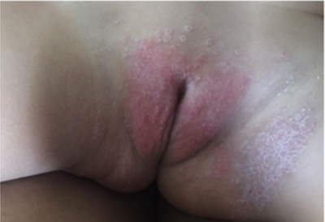
A Hidrocortisona pomada.
B Cetoconazol creme.
C Neomicina + bacitracina pomada.
D Pimecrolimo creme.
Questão 30 · Tratamento · Apresentação clínica · 4000102441Mulher, 22 anos de idade, há 1 semana com prurido intenso em punhos, interdígitos e regiões axilares, com importante piora durante a noite. Nega comorbidades, casada, esposo apresenta sintomas similares. Durante exame clínico, encontrado o seguinte achado em punho, bilateralmente, e lesões similares em regiões axilares, reproduzidas a seguir. Qual é o tratamento para a queixa desta paciente?
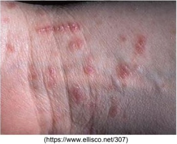
A Loratadina por via oral
B Prednisona por via oral
C Ivermectina por via oral
D Beclometasona tópica
E Cetoconazol tópica
Questão 31 · Tratamento · 4000102216O tratamento inicial de escolha para escabiose no paciente adulto é:
A benzoato de benzila.
B ivermectina.
C lindano a 15%.
D solução com enxofre a 10%.
Questão 32 · Intertrigo por cândida · Dermatite de f raldas · 4000099517Lactente, 3 meses, há 15 dias com eritema intenso em nádegas e porções internas das coxas. Há dois dias com piora do eritema e aparecimento de lesões-satélite papulovesiculares minúsculas. A CONDUTA É:
A Limpeza da área com água bicarbonatada, utilizar oxido de zinco a cada troca defraldas e suspensão do uso de fraldas descartáveis.
B Limpeza da área com água, deixar a criança o maior tempo possível sem fraldas ecorticosteroide tópico.
C Limpeza da área com água, deixar a criança o maior tempo possível sem fraldas eagente antifúngico tópico.
D Limpeza da área com água bicarbonatada, corticosteroide tópico e suspensão do usode fraldas descartáveis.
Questão 33 · Tratamento · Apresentação clínica · 4000096503Lactente de oito meses, sexo masculino, é trazido à consulta e a mãe relata irritabilidade, choro intenso e coceira à noite. Exame físico: lesões eritemato-papulares de 0,1 a 0,3cm disseminadas no tronco e membros e lesões papulo-vesiculares na região palmo-plantar, com intenso prurido cutâneo. Baseado no quadro clínico, o tratamento indicado é:
A corticoide tópico
B clotrimazol tópico
C griseofulvina sistêmica
D permetrina a 5% tópica
E ivermectina sistêmica
Questão 34 · Tratamento · 4000096386O tratamento de escolha para escabiose em um pré-escolar, dois anos, previamente saudável é:
A permetrina creme a 5% por 8 – 12 horas
B ivermectina 600 μg/kg em dose única
C albendazol 400 mg em dose única
D lidane creme a 1% por 8 – 12 horas
E anitazolamina 7mg/kg de 12/12h
Questão 35 · Pediculose do couro cabeludo · 4000095925Menina com 5 anos de idade foi diagnosticada com pediculose. Assinale a alternativa que contém afirmações e/ou orientações adequadas para essa criança.
A Afastar a criança da escola até o tratamento completo.
B Cortar os cabelos e lavar a cabeça todos os dias.
C Aplicar creme ou vaselina nos cabelos ao deitar-se e retirar com o banho pela manhã.
D Lavar roupas de cama e toalhas com água quente ou a seco.
Questão 36 · Tratamento · Larva migrans · Pediculose do couro cabeludo · 4000084485Considerando algumas condições dermatológicas na criança, analise as seguintes assertivas e assinale V, se verdadeiras, ou F, se falsas. ( ) A escabiose é considerada curada quando não houver mais lesões e houver desaparecido por completo o prurido. ( ) A ivermectina pode ser usada nos tratamentos dermatológicos em crianças de todas as idades e peso. ( ) A larva migrans cutânea progride sob a pele por trajetos sinuosos sem atingir a corrente sanguínea. ( ) Novas fórmulas de repelentes têm sido excelente profilaxia para a pediculose. A ordem correta de preenchimento dos parênteses, de cima para baixo, é:
A F - F - V - F.
B V - F - F - V.
C F - V - F - V.
D V - V - V - F.
Questão 37 · Tratamento · 4000072273Lactente de 5 meses foi internada na enfermaria de pediatria devido a falha terapêutica para escabiose, segundo a plantonista da Unidade de Pronto Atendimento, realizado há 1 semana com permetrina solução à 5% por 3 dias, já que o bebê permanecia com prurido cutâneo intenso. O relato inicial é de presença de pápulas crostosas e vesículas nas regiões periumbilical, tórax, axilas, mãos e pés. Estas desapareceram nesta semana, permanecendo com manchas hipercrômicas e eczemas nestes locais. Qual a conduta CORRETA a ser realizada?
A Repetir o tratamento com permetrina 5% mais 3 dias.
B Tratar com Ivermectina em dose única.
C Iniciar tratamento tópico com dexametasona em pomada.
D Iniciar tratamento com anti-histamínico oral.
Questão 38 · Larva migrans · 4000063354Criança de 3 anos com lesões pruriginosas na pele com aspecto de traçados serpiginosos elevados e eritematosos com formação de pápula na porção linear terminal. Diante desse quadro, indique a alternativa que contempla o tratamento mais adequado:
A Permetrina loção a 5%.
B Benzoato de benzila tópico.
C Enxofre loção a 5%.
D Tiabendazol tópico a 15% creme.
Questão 39 · Tratamento · Apresentação clínica · 4000062043Lactente de 7 meses, sexo feminino, é trazido ao pronto atendimento infantil pela mãe, que relata irritabilidade, choro intenso e coceira à noite. Exame físico: lesões eritemato-papulares de 0,1 a 0,3cm disseminadas no tronco e membros e lesões papulo-vesiculares na região palmo-plantar, com intenso prurido cutâneo. Baseado no quadro clínico, o tratamento indicado é:
A corticoide tópico
B clotrimazol tópico
C ivermectina sistêmica
D permetrina a 5% tópica
Questão 40 · Pitiríase versicolor · 4000057956Escolar de oito anos é atendida na unidade de saúde com lesões cutâneas hipo e hiperpigmentadas em face e tronco que, quando atritadas, apresentam descamação furfurácea. A hipótese diagnóstica mais provável é:
A dermatite seborreica.
B ptiríase versicolor.
C tínea corporis.
D hanseníase.
E vitiligo.
Questão 41 · Verruga viral · 4000050766As verrugas virais são infecções causadas pelo papiloma vírus humano (HPV) e são comuns nas crianças. Sobre essas infecções, assinale a alternativa correta.
A As verrugas plantares são pouco dolorosas e respondem rapidamente ao tratamento.
B As verrugas na região perianal em crianças abaixo de 1 ano ocorrem exclusivamente por transmissão sexual e tornam obrigatórias a investigação de abuso.
C As verrugas planas, comuns na criança, são grandes e ocorrem principalmente no tronco.
D Nas verrugas periungueais, as complicações como inflamação e infecção são infrequentes.
E No tratamento das verrugas em crianças, preferem-se os medicamentos de uso tópico por serem menos agressivos.
Questão 42 · Intertrigo por cândida · Dermatite de f raldas · 4000034144Marina leva seu lho Pablo de 4 meses para consulta de puericultura. Ela está amamentando e oferece apenas água nos intervalos. A mãe está preocupada, pois seu lho está evacuando uma vez a cada 5 dias, fezes pastosas amolecidas e amarelas. Outra preocupação é que ele ainda não balbucia sons bilabiais (mã, pã). Ao exame físico a estatura encontra-se no escore zero e o peso entre o zero e menos 2 (0 a -2). Nota-se na região perineal, placas eritematosas, com pápulas con uentes, bordas demarcada, acometendo escroto e pregas inguinais. Nota-se a presença de lesões satélites. Na avaliação do desenvolvimento, Pablo quando colocado em decúbito ventral levanta a cintura escapular, apoiado no antebraço, brinca com as mãos e grita. A criança apresenta reflexo de Moro incompleto e a marcha reflexa está presente. As lesões descritas na região perineal são compatíveis com o diagnóstico de:
A dermatite de fraldas por Candida albicans.
B dermatite de fraldas por resíduos de fezes e urina.
C reação atópica de contato, provavelmente pela fralda descartável.
D reação alérgica, provavelmente pelo uso de lenço umedecido.
Questão 43 · Verruga viral · Pitiríase versicolor · Acne · 4000026712Sobre doenças dermatológicas comuns da Atenção Primária à Saúde, julgue as assertivas a seguir: I. A pitiríase versicolor frequentemente se apresenta como máculas hipocrômicas com descamação e sem prurido. II. A verruga viral é uma condição auto-limitada de tratamento opcional, enquanto o molusco contagioso é uma condição que exige tratamento. III. O tratamento inicial da acne inflamatória leve a moderada pode ser realizado com uso de retinóide tópico combinado a antibiótico tópico ou oral. IV. O tratamento da escabiose pode ser realizado com permetrina tópica 5%.
A Apenas as alternativas II e III estão corretas.
B Apenas as alternativas I e III estão corretas.
C Apenas as alternativas I, II e IV estão corretas.
D Apenas as alternativas I, III e IV estão corretas.
Questão 44 · Intertrigo por cândida · Dermatite de f raldas · 4000024431RN com 21 dias de vida apresentando em região glútea e genital pápulas que con uem em placas, pústulas, lesões satélites e algumas pústulas rompidas de base eritematosa. Qual o diagnóstico?
A Impetigo.
B Tinha crural.
C Dermatite atópica.
D Candidose cutânea.
Questão 45 · Escabiose · 4000013666Um paciente de 7 anos de idade foi levado ao médico com queixa de prurido importante no corpo há duas semanas, principalmente à noite, e que atrapalha o sono. Ao exame físico, apresenta erupções, pápulas eritemato-crostosas, túneis e escoriações em regiões de punhos, mãos (dedos e palmas), axilas, abdome inferior e plantas dos pés. Está febril. O irmão dele, de 5 anos de idade, apresenta lesões semelhantes, segundo a mãe, mas de intensidade mais branda e de início há quatro dias. Acerca desse caso clínico, assinale a alternativa que indica, respectivamente a principal hipótese diagnóstica e o tratamento sugerido.
A Escabiose; ivermectina oral.
B Dermatite de contato; hidrocortisona tópico.
C Varicela; banho com permanganato de potássio.
D Impetigo; mupirocina tópico.
E Pitiríase Alba; fluconazol oral.
Questão 46 · Tinea capitis · 4000007145Escolar de 8 anos, apresenta infecção por dermató tos que ao exame revela alopecia tonsurante com descamação e prurido. O tratamento adequado é:
A Corticoide oral
B Corticoide tópico
C Cetoconazol tópico
D Griseofulvina
Questão 47 · Escabiose · 4000006271Jovem de 19 anos comparece à consulta apresentando pápulas eritematosas e pruriginosas nas regiões interdigitais, púbis e linhas axilares, e piora de prurido noturno. O diagnóstico mais provável é:
A Tinea corporis
B molusco contagioso
C Herpes
D escabiose
Questão 48 · Onicomicose · 4000003582Onicomicoses são infecções das unhas, causadas por fungos dermatofitos e fungos filamentosos não dermatofitos. Sobre o tratamento das onicomicoses, assinale a alternativa CORRETA.
A Recomenda-se sempre a terapêutica sistêmica e tópica. A escolha terapêutica mais eficaz para fungos dermatofitos é a terbinafina, na dose de 250mg/dia.
B O cetoconazol, na dose de 200mg, no período de 90 dias, é medicamento de escolha para onicomicoses, causadas por fungos dermatofitos.
C O itraconazol, na dose diária de 100mg dia, deve ser feito pelo período de 30 dias.
D Se o grau de distrofia ungueal for muito importante, recomenda-se somente avulsão cirúrgica ou química, não sendo necessário tratamento medicamentoso.
E Quando a unha afetada é dos pododáctilos, recomenda- se tratamento de 2 a 3 meses, enquanto às unhas dos quirodáctilos, recomenda-se menor tempo de tratamento, devido a terem crescimento rápido.
Questão 49 · Intertrigo por cândida · 4000003576Paciente do sexo feminino, 63 anos, obesa e com baixa adesão ao tratamento de diabetes tipo 2, apresenta queixa de prurido em axilas, região perineal e região inframamária. Ao exame, observa-se rash avermelhado com discreta secreção esbranquiçada nas áreas relatadas. Assinale a alternativa CORRETA, que apresenta, respectivamente, o diagnóstico mais provável e o tratamento mais apropriado para a condição.
A Tinea corporis - Antifúngico via oral.
B Acantose nigricans - Melhor controle glicêmico.
C Intertrigo - Antifúngico tópico.
D Demopatia diabética - Tratamento não necessário.
E Bullosis diabeticorum - Melhor controle glicêmico.
Questão 50 · Tinea corporis · 4000118903Criança de 5 anos apresentou lesão do tipo placas anulares descamativas, circunscritas, com um centro claro e limites descamativos, vesiculares, papulares ou pustulares como na foto abaixo: Qual o diagnóstico mais provável para a lesão?
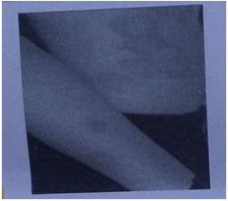
A Tinea faciei.
B Pitiríase versicolor.
C Tinear corporis.
D Tinea cruris.
E Onicomicose.
Questão 51 · Larva migrans · Tratamento · Apresentação clínica · 4000113868As a rmativas seguintes se referem a dermatoses frequentes no período infanto- juvenil Coloque (V) para as a rmativas verdadeiras e (F) para as afirmativas falsas: ( ) No tratamento de manutenção da dermatite atópica, a hidratação da pele deve ser realizada diariamente com a pele úmida logo após o banho, mesmo na presença da remissão dos sintomas. ( ) No tratamento do impetigo, o uso de antibióticos tópicos está indicado nos casos de lesões localizadas e a escolha do medicamento independe dos padrões de resistência de cada comunidade. ( ) A escabiose em lactentes tende a ser disseminada e acomete frequentemente a região palmoplantar. ( ) O tratamento de eleição da tínea capitis em crianças consiste no uso de antimicótico tópico. ( ) A larva migrans cutânea pode ocorrer em várias partes do corpo, por exemplo nas coxas e nádegas e formação de múltiplas pápulas eritematosas semelhantes a picada de insetos. A sequência correta é:
A V-F-V-F-V.
B V-F-V-V-F.
C F-F-V-F-V.
D V-F-V-F-F.
E F-V-V-F-V.
Questão 52 · Molusco contagioso · 4000109064Você é medico em uma Unidade de Saúde da Família e uma mãe traz seu lho de 7 anos para a consulta, pois o menino iniciou com lesões no tronco, ombros e face (imagem abaixo) há alguns dias. As lesões não são pruriginosas, não doem, mas estão espalhando e a mãe está preocupada, pois tem outros lhos e a criança frequenta a escola. O diagnóstico mais provável é
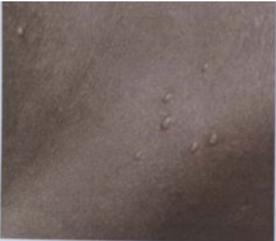
A molusco contagioso.
B varicela.
C penfigoide bolhoso.
D herpes zoster.
Questão 53 · Tratamento · Apresentação clínica · 4000108859Você é médico de uma unidade da família e atende uma mulher de 28 anos G2P1A0, com idade gestacional de 23 semanas 6 dias, com queixa de prurido pelo corpo. O prurido piora à noite e acomete principalmente as mãos, braços, região periumbilial e as mamas (Figura abaixo). Relata que seu lho voltou da criche com quadro semelhante. Diante do quadro, a melhor opção medicamentosa para o tratamento da mãe seria a prescrição de
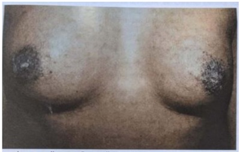
A loção de benzoato de benzila a 25%.
B creme de permetrina a 5%
C dose única de ivermectina.
D creme de enxofre a 5%
Questão 54 · Tratamento · Apresentação clínica · 4000106311Menino de oito meses é trazido à consulta por sua avó que relata irritabilidade, choro intenso e coceira à noite. Exame físico: lesões eritemato-papulares de 0,1 a 0,3cm disseminadas no tronco e membros e lesões pápulo-vesiculares na região palmo-plantar, com intenso prurido cutâneo. Baseado no quadro clínico, o tratamento indicado é:
A corticoide tópico.
B clotrimazol tópico.
C ivermectina sistêmica.
D griseofulvina sistêmica.
E permetrina a 5% tópica.
Questão 55 · Tratamento · Apresentação clínica · 4000102787Homem, 33 anos, com vida sexual promíscua, refere prurido noturno intenso pelo corpo e aparecimento de pequenas lesões papulares e eritematosas múltiplas, predominantemente crostosas e muitas delas escoriadas, com presença de pequenas pústulas, em regiões interfalangianas das mãos, nos punhos, nas axilas e na genitália. Analise a imagem a seguir, feita da região do punho desse paciente. Assinale a alternativa que apresenta uma forma e caz para o tratamento adequado desse paciente, considerando a prevalência e o agente etiológico mais provável após a anamnese e o exame físico.
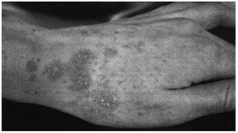
A Ivermectina.
B Dapsona.
C Aciclovir.
D Nistatina.
Questão 56 · Tratamento · Apresentação clínica · Complicações · 4000100797Uma criança de quatro anos com uma queixa de coceira nas mãos foi trazida por sua mãe. A criança cou em uma creche durante o dia enquanto sua mãe trabalhava. A menina teve coceira intensa e uma erupção nas mãos e braços há cerca de duas semanas. A coceira tornou-se mais grave e interferiu no sono da criança. No exame físico, a criança parecia bem nutrida e cuidada. A pele das mãos, pulsos e antebraços parecia vermelha e escoriada. "Faixas" serpenteantes foram notadas nas laterais de seus dedos, nos aspectos ventrais de seus pulsos e nas dobras poplíteas. Várias das faixas estavam in amadas e começando a formar pústulas. A mãe a rmou que várias outras crianças da creche estavam enfrentando um problema semelhante. Considerando o exposto acima assinale a alternativa com o diagnóstico clínico e a melhor conduta:
A Escabiose complicada, hexacloreto de benzeno gama a 1% e antibioticoterapia
B Eczema atópico, corticoide de baixa potência
C Sarna, creme de permetrina
D Estrófulo, anti-histamínicos
Questão 57 · Tratamento · Apresentação clínica · Complicações · 4000098723O médico de uma Unidade Básica de Saúde (UBS) recebe várias crianças de uma mesma escola da região, todas com idade entre 9 e 10 anos de idade. A queixa é semelhante: houve surgimento, há cerca de 10 dias, de lesões vesico-papulosas associadas a prurido intenso, principalmente no horário noturno, em região interdigital, punhos, nádegas, axila e periumbilical. Observa-se, também, a presença de pústulas friáveis e crostas facilmente removíveis sobre algumas das áreas pruriginosas. Além das medidas gerais de controle, qual dos seguintes tratamentos estaria mais indicado?
A Nistatina e amoxicilina.
B Permetrina e cefalexina.
C Apenas Ivermectina.
D Aciclovir e penicilina benzatina.
Questão 58 · Pediculose · 4000079910A pediculose é um achado clínico comum na atenção primária à saúde. Em relação à essa enfermidade, é correto a rmar que o:
A acometimento do couro cabeludo pode ser assintomático
B tratamento tópico recomendado é a permetrina 5% shampoo
C uso do pente fino é a forma mais eficiente de tirar os piolhos mortos
D local de acometimento mais comum é a região frontal do couro cabeludo
Questão 59 · Pediculose do couro cabeludo · 4000059956Uma menina de 2 anos apresenta prurido no couro cabeludo há 2 meses. Refere que teve pediculose há 6 meses e melhorou com uso de xampu pediculicida. O exame físico geral é normal, com peso de 12 quilos, sendo observadas diversas lêndeas localizadas nos os dos cabelos bem próximas à raiz, escoriações no couro cabeludo e presença de pediculus capitis. Sobre o caso descrito, é correto afirmar:
A Trata-se de reinfecção de pediculose, e nesses casos raramente ocorre infecção secundária.
B Na reinfecção da pediculose, o prurido frequentemente tem início depois de 3 a 6 semanas.
C Trata-se de pediculose, e nesse caso é necessário apenas orientar a remoção das lêndeas.
D O diagnóstico é pediculose, e nesse paciente o tratamento de escolha é ivermectina oral.
E O diagnóstico é reinfecção de pediculose e é necessário tratar os contatos infectados.
Questão 60 · Tratamento · 4000057917O medicamento de escolha para tratamento da escabiose é:
A Enxofre.
B Lindano.
C Permetrina.
D Deltametrina.
Questão 61 · Pitiríase versicolor · 4000052564APM, masculino, 25 anos, pardo, trabalhador da construção civil, amasiado, estudou até a 4ª serie do primeiro grau, etilista. Procura a UBS com a seguinte queixa: primeiro episódio de lesões de pele com inicio há quatro meses, esposa que percebeu. Como não coçavam e não doíam não deu importância a elas, porém percebeu que estão aumentando, pois agora já consegue vê-las no pescoço, tórax e braços. As pessoas já começaram a perguntar o que é aquilo e não quer car todo manchado. Ao Exame físico você observa: lesões foliculares que coalesceram, escamação furfuracea, manchas hipocrômicas e algumas hipercrômicas, sensibilidade preservada, sem área de alopecia. Responda na seguinte sequência: diagnostico provável, agente etiológico e tratamento sugerido para o caso.
A Tinha de corpo; Trichophyton rubrum; Itraconazol 200mg/d por 15 a 30 dias;
B Candidose superficial; Leveduras do gênero cândida; Fluconazol 150m/g por 7 a 10 dias;
C Pitiríase Versicolor; Malassezia sp; itraconazol 200mg/d por 5 a 7 dias;
D Piedra Branca; Leveduras do gênero Trichospororon; depilar o local acometido + Azólicos tópicos por no mínimo 30 dias;
E Tinha negra; Hortaea werneckii; queratoliticos tópicos + Azólicos tópicos por no mínimo 30 dias.
Questão 62 · Tratamento · 4000051614MNS, 8 anos, sexo feminino, trazida pela avó à UBS com quadro cutâneo de pequenas pápulas lineares disseminadas acompanhadas de prurido, sendo feito o diagnóstico de escabiose. Qual seria a melhor opção de escabicida tópico, levando em considereção eficácia, comodidade de uso e segurança?
A Monossulfiram
B Benzoato de benzila
C Iverrmectina
D Calamina
E Permetrina
Questão 63 · Larva migrans · Miíase primária berne · Apresentação clínica · 4000049986As infestações de pele são frequentes na faixa etária pediátrica e podem apresentar di culdade em seu diagnóstico. Podemos afirmar que:
A A escabiose nos lactentes apresenta lesões bem localizadas em regiões interdigitais, axilas e genitais.
B A pediculose do couro cabeludo não necessita tratamento na infância pelo seu ciclo autolimitado e por não causar transtornos maiores à saúde.
C A larva migrans cutânea é uma erupção cutânea causada pela penetração e migração de larvas do Ancylostoma presente principalmente em fezes de ratos e porcos.
D A miíase primária é causada pelo desenvolvimento da larva de várias moscas, principalmente a Dermatobia hominis, ocasionando nódulo inflamatório com orifício central que permite a respiração da larva. ida oib pr ed
Questão 64 · Tinea capitis · 4000045614Escolar de 10 anos de idade, foi levada a consulta em Unidade Básica de Saúde por apresentar lesão em placa com crescimento progressivo, dolorosa, com supuração intensa, tonsura em couro cabeludo e linfadenopatia cervical há 2 semanas. Nega febre. Em relação a esse caso. assinale a alternativa que contém o diagnóstico e tratamento corretos.
A Impertigo- cefalexina oral por 10 dias.
B Furúnculo- Azitromicina oral por 3 dias.
C Tinea captis impetiginizada - cetoconazol tópico e cefalexina oral por 10 dias.
D Tinea captis - cetoconazol xampu por 4 semanas.
E Kérion celsi - griseofulvina oral por 6 a 8 semanas.
Questão 65 · Molusco contagioso · 4000043766Paciente com 5 anos de idade, apresenta múltiplas lesões (pápulas), da cor da pele, com umbilicação central, causada pelo vírus do grupo Poxvirus. O diagnóstico mais provável é:
A Molusco contagioso
B Escabiose
C Verrugas vulgares
D Tínea corporis
E Ceratose folicular
Questão 66 · Diagnóstico · Apresentação clínica · 4000040046Um paciente de 20 anos, transplantada renal, apresenta quadro pruriginoso generalizado, caracterizado por eritema e escamocrostas exuberantes nos interdígitos das mãos, cotovelos e pregas axilares anteriores e posteriores. No tronco, observam-se estruturas lineares de 2 a 4mm, algumas encimadas por vesicocrostas numa das extremidades. As aréolas mamárias também estão acometidas. O diagnóstico e o dado epidemiológico que permite estabelecê-lo, respectivamente, são:
A estrófulo; paciente procedente do meio rural
B sarna norueguesa ou crostosa; outros membros da família acometidos
C larva migrans; paciente procedente do litoral
D psoríase; outros membros da família acometidos
E urticária; uso de medicamento com corante
Questão 67 · Apresentação clínica · 4000034068Paciente informa que apresenta quadro de prurido intenso, sobretudo noturno, além de "pele grossa" entre os dedos e na região das axilas. Ao exame físico observam-se lesões vesiculosas, pápulas ou sulcos. Ao ser inquirido se há mais algum familiar com os mesmos sintomas, informa positivamente. Diante deste caso a principal hipótese diagnosticada é
A molusco contagioso.
B dermatite de contato.
C tinhas.
D escabiose.
Questão 68 · Tratamento · 4000030269O tratamento de escolha para escabiose em um pré-escolar, de dois anos, previamente saudável, é:
A Permetrina creme a 5% por 8-12 horas.
B Ivermectina 600ug/kg em dose única.
C Albendazol 400mg em dose única.
D Lidane creme a 1% por 8-12 horas.
Questão 69 · Tratamento · Apresentação clínica · 4000027017A escabiose norueguesa ou crostosa é uma forma que ocorre principalmente em crianças imunodeprimidas, com síndrome de Down, desnutridas e prematuras. O tratamento indicado para crianças menores de dois meses é:
A Enxofre precipitado a 10% em creme, loção cremosa, ou vaselina sólida, com aplicação uma vez à noite, por três noites, e com repetição após uma semana.
B Permetrina em loção cremosa a 1 ou 5%, aplicada uma vez, com repetição após uma semana.
C Ivermectina, 200 mcg/kg, em dose única.
D Deltametrina em loção, 20 mg/100 ml, aplicada uma vez ao dia, por dez dias.
Questão 70 · Tinea capitis · 4000020786A tinea capitis é a infecção fúngica mais comum na infância, acomete o couro cabeludo e caracteriza-se por alopecia descamativa distribuída em placas bem delimitadas e com cabelos quebrados logo após a emergência do folículo piloso. Sobre a tinea capitis está CORRETO afirmar:
A No Brasil, o fungo mais envolvido nos casos de tinea de couro cabeludo e tinea de corpo em crianças é o Malassezia furfur.
B Kerion é uma apresentação inflamatória da tinea capitis, com placas infiltradas, alopecia, pústulas e frequentemente drenagem de secreção purulenta;
C O tratamento da
D A confirmação diagnóstica é importante para que se estabeleça o tratamento, sendo o padrão-ouro a presença de fungos no exame microscópico direto;
Questão 71 · Larva migrans · 4000019755Criança, 6 anos, é levada pela mãe à consulta de demanda espontânea em unidade básica de saúde devido coceira e vermelhidão em calcanhar direito após m de semana em casa de praia. Observando a imagem, qual a melhor conduta medicamentosa? (fonte imagem: http://www.atlasdermatologico.com.br/disease.jsf? diseaseId=225)
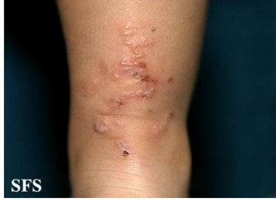
A Loratadina 5 mg/dia durante 5 dias.
B Griseofulvina 10 mg/kg/dia durante 4 semanas.
C Aciclovir 20 mg/kg/dose 4 vezes ao dia durante 5 dias.
D Albendazol 400 mg/dia durante 3 dias.
Questão 72 · Tratamento · 4000015448O tratamento de escolha para escabiose em um pré-escolar, dois anos, previamente saudável é:
A Lidane creme a 1% por 8 – 12 horas.
B Ivermectina 600 μg/kg em dose única.
C Albendazol 400 mg em dose única.
D Amoxacilina 50 mg/kg/dia por 7 dias.
E Permetrina creme a 5% por 8 – 12 horas.
Questão 73 · Molusco contagioso · 4000011752Jéssica, 11 anos, é levada à consulta com Pediatra devido ao surgimento de lesões papulares umbilicadas, de tamanhos variados (3 mm a 1 cm de diâmetro), em abdome, há cerca de 3 semanas. Sua genitora a rma que inicialmente eram poucas, que vem aumentando seu número e que são assintomáticas. Qual a hipótese diagnóstica mais provável e qual a melhor conduta a ser tomada para Jéssica?
A Prurigo estrófulo, devendo ser utilizado corticoide tópico.
B Nódulo escabiótico, devendo ser utilizado anti-histamínico.
C Molusco contagioso, devendo ser realizada curetagem das lesões.
D Verruga filiforme, devendo ser utilizada solução à base de ácidos salicílico e lático.
E Condiloma acuminado, devendo ser utilizada solução à base de ácidos salicílico e lático.
Questão 74 · Dermatologia · 4000003792Pré-escolar de 5 anos, é levado ao atendimento médico com lesão em pele que iniciou com placa descamativa seca, ligeiramente eritematosa e elevada que disseminou centrifugamente. Qual o diagnóstico provável?
A Estrófulo
B Impetigo bolhoso
C Tinea corporis
D Psoríase
Questão 75 · Tratamento · Apresentação clínica · 4000125884Lactente de quatro meses de idade apresenta há duas semanas irritação, principalmente à noite, di culdade para dormir, movimento de fricção de um pé no outro, vesículas na borda lateral interna de ambos os pés e papulocrostas no tronco e couro cabeludo. O diagnóstico mais provável e o tratamento mais indicado são, respectivamente:
A Escabiose - permetrina tópica.
B Escabiose - ivermectina oral.
C Estrófulo - anti-histaminico oral.
D Estrófulo - anti-histaminico tópico.
E Desidrose - corticoesteróide tópico.
Questão 76 · Molusco contagioso · 4000112097Criança de 5 anos vem ao atendimento ambulatorial por lesões na pele, sem outros sintomas. Ao exame ela apresenta pápulas lisas, cupuliformes, da cor da pele, peroladas e com umbilicação central em axilas e coxas. A hipótese diagnóstica para esse caso é:
A Molusco contagioso.
B Escabiose.
C Verruga vulgar.
D Ceratose folicular.
E Varicela.
Questão 77 · Escabiose · 4000106440Assinale a alternativa CORRETA em relação à Escabiose:
A Um fator importante que determina que o paciente e o Médico acreditem que houvefalha terapêutica é a persistência do prurido. Isso ocorre porque a resposta imune residual aos ácaros persiste, e até mesmo aumenta, durante semanas depois que os ácaros foram mortos. A persistência do prurido resulta em escoriação e pode ser fonte de frustração para os pacientes.
B É importante explicar ao paciente que, além do tratamento sintomático, ele deveprosseguir com a aplicação ou ingestão de terapia antiparasitária, repetindo-a além da indicação.
C No lactente a medicação deve ser aplicada em todo o corpo, excluindo a face.
D O tratamento com anti-histamínicos está indicado no tratamento da escabiose pelorisco de desenvolvimento de sarna crostosa.
Questão 78 · Tinea corporis · 4000105730Mulher, 60 anos, do lar, refere surgimento de lesões pouco pruriginosas que progressivamente atingiram extensas áreas do abdome, tronco, axilas e virilhas há 1,5 ano (figura). Está em uso de prednisona há 4 anos para tratamento de nefropatia com proteinúria. Qual é o achado laboratorial mais provável?
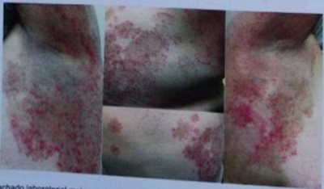
A Hiperplasia epidérmica difusa.
B Fator antinúcleo positivo.
C Hifas septadas no exame direto.
D Proliferação de linfócitos T atípicos.
Questão 79 · Pitiríase versicolor · 4000102754Homem de 18 anos de idade, masculino, apresenta há 2 meses lesões cutâneas sem dor ou prurido. No exame dermatológico, observam-se manchas hipocrômicas, ovaladas, con uentes, com descamação furfurácea, acometendo as faces laterais do pescoço e dorso superior. À extensão das lesões, observa-se acentuação da descamação. Não há alteração da sensibilidade. Apresentou quadro anterior semelhante, que melhorou com medicação tópica (não lembra qual). Qual é a principal hipótese diagnóstica?
A Pitiríase versicolor.
B Hanseníase indeterminada.
C Micose fungoide.
D Dermatite atópica.
Questão 80 · Intertrigo por cândida · 4000088722A infecção por leveduras do gênero Cândida é comum em nosso meio. A candidose, em sua forma intertriginosa,
A caracteriza-se pela presença de lesões satélites que se iniciam como vesículas ou pústulas, comumente detectáveis ao exame clínico.
B acomete preferencialmente as dobras, porém as regiões submamárias e inguinais costumam ser poupadas.
C raramente apresenta maceração.
D tem a terbinafina via oral como principal indicação terapêutica.
Questão 81 · Tratamento · 4000081675Uma criança, pré-escolar, com 02 anos de idade, comparece na sua unidade para avaliação de rotina. Ao exame você fecha diagnóstico de escabiose. A criança estava previamente saudável, assim para o tratamento de escolha nesse caso você prescreve:
A Permetrina creme a 5% por 8 – 12 horas
B Ivermectina 600µg/kg em dose única
C Albendazol 400 mg em dose única
D Lidane creme a 1% por 8 – 12 horas
Questão 82 · Tratamento · Apresentação clínica · 4000079252Lactente de 45 anos com aparecimento insidioso de lesões papulovesiculares eritematosas e pruruginosas em troco e axilas. O prurido piora à noite e a mãe apresenta lesões semelhantes em antebraços e na região abaixo das mamas. O tratamento mais adequado para este lactente seria com:
A enxofre precipitado a 10%.
B permetrina tópica a 1%.
C ivermectina oral dose única.
D deltametrina loção.
Questão 83 · Tratamento · Apresentação clínica · 4000070936Adolescente de 16 anos vem à consulta ambulatorial referindo prurido no corpo todo, com piora à noite. Ela refere que sua mãe e seu irmão também estão com prurido. Sobre o tratamento tópico da escabiose, é CORRETO afirmar que:
A O lindano a 1% em loção é muito eficaz e seguro em relação à toxicidade.
B Os sabonetes escabicidas possuem baixo índice de efeitos colaterais e boa eficácia.
C A permetrina a 1% em loção tem baixo índice de efeitos colaterais e alta eficácia, sendo o tratamento de escolha.
D O enxofre, na forma precipitada (5 a 10%) em pasta d’água, pode ser usado em crianças com menos de dois meses, gestantes e lactantes.
Questão 84 · Escabiose · 4000068795Uma das zoodermatoses mais importantes no nosso meio é a escabiose. Com relação a este agravo, assinale a alternativa correta:
A O prurido é o sintoma básico.
B A lesão cutânea mais típica são os nódulos acastanhados em áreas mais difíceis de coçar.
C Deltametrina é o antiescabiótico de primeira escolha para gestantes.
D A ivermectina é a primeira escolha para menores de 5 anos.
E A toxicidade da permetrina limita seu uso
Questão 85 · Tinea capitis · 4000068395A Tinea capitis é uma infecção fúngica muito comum na infância. Acomete o couro cabeludo e caracteriza-se com descamação e alopecia. São diagnósticos diferenciais da tinea capitis, exceto:
A Dermatite seborréica
B Psoríase
C Sífilis
D Tricotilomania
E Lúpus eritematoso
Questão 86 · Molusco contagioso · 4000066588O molusco contagioso é uma afecção da pele que acomete preferencialmente crianças. Quais são a sua etiologia e a principal forma de tratamento?
A Viral e curetagem.
B Viral e excisão.
C Bacteriana e curetagem.
D Bacteriana e drenagem.
E Fúngica e excisão.
Questão 87 · Tratamento · 4000035236Sobre escabiose, marque a alternativa INCORRETA.
A O enxofre a 5% tópicos devem ser utilizado em menores de 2 anos.
B O tratamento da família e dos contactantes é uma etapa fundamental para o sucesso do tratamento.
C A ivermectina é uma opção para o tratamento desta patologia por via oral.
D O principal sintoma é o prurido principalmente noturno, e a principal lesão são pápulas e vesículas. A escoriação é frequente. Pode haver polimorfismo regional.
Questão 88 · Molusco contagioso · Celulite · Impetigo · 4000031643O conhecimento das lesões cutâneas nas diferentes patologias é fundamental para o correto atendimento pediátrico. Considerando a atenção à criança e ao adolescente durante a consulta onde a queixa for dermatose, assinale V para as afirmativas verdadeiras e F para as falsas. ( ) Doença frequente na criança, o impetigo pode se apresentar como bolhas que se rompem facilmente, originando posteriormente crostas amareladas na evolução do quadro; ( ) A celulite na criança pode se apresentar como nódulos bem delimitados, com hiperemia local, calor e edema, tendo início agudo, porém sem comprometimento do estado geral; ( ) O molusco contagioso se apresenta como pápulas peroladas, umbilicadas, não dolorosas, tendo etiologia viral. Assinale a alternativa que apresenta a sequência CORRETA.
A F V F.
B F F V.
C V F V.
D V V F.
Questão 89 · Apresentação clínica · 4000029653Sobre a escabiose na infância, assinale a alternativa CORRETA.
A No lactente, a medicação é aplicada em todo o corpo, excluindo a face.
B A ausência de prurido noturno afasta a possibilidade de escabiose.
C Os familiares de um infectado sem queixa de lesões não são tratados.
D A permetrina é considerada a primeira linha de tratamento, mas só deve ser utilizada em crianças acima de 6 meses.
E A ivermectina oral é indicada nos pacientes com dermatite atópica grave.
Questão 90 · Doenças parasitárias · 4000023619As dermatozoonoses ou zoodermatoses são quaisquer alterações da pele por ação temporária ou permanente de protozoários, celenterados, insetos e larvas, agindo como parasitas ou não, em qualquer fase de seu ciclo biológico. Assim,
A a escabiose é causada pelo Sarcoptes scabiei var. hominis, sendo o principal sintoma clínico o prurido, em geral intenso e principalmente diurno.
B a larva migrans é uma afecção devida à penetração, na epiderme, da larva do Strongyloides stercoralis, parasita comum do intestino do cão e do gato.
C a pediculose do couro cabeludo é causada pelo Pediculus humanus var. capitis, e o seu diagnóstico pode ser confirmado pela presença de ovos (lêndeas) aderentes à haste do cabelo.
D os ixodides ou carrapatos alimentam-se de linfa e queratina dos seus hospedeiros e são transmissores de doenças, como a tripanossomíase americana.
Questão 91 · Escabiose · 4000018952Com relação à escabiose, é correto afirmar que:
A O
B A persistência do prurido por uma semana após o tratamento é sinal de falha terapêutica.
C A ivermectina não tem ação ovicida, apenas acaricida.
D O benzoato de benzila é contra-indicado em menores de 6 meses.
E Os ovos do
Questão 92 · Apresentação clínica · 4000015919Em visita puerperal, a equipe de saúde observa que um recém-nascido de 15 dias apresenta irritabilidade e di culdade em mamar. Não há febre ou sintomas respiratórios, e as funções eliminatórias estão normais. Ao exame, observa-se eritema máculo-papular em face, região occipital, dorso e tórax (foto). A mãe apresenta lesões semelhantes nas mãos, mamas e sulcos inframamários com prurido mais intenso à noite. Qual a melhor opção terapêutica para essa criança?
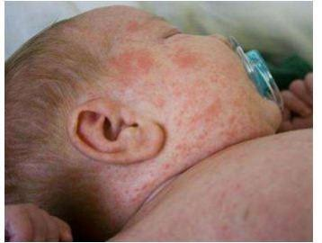
A Loção de permetrina a 5%.
B Creme de cetoconazol a 2%.
C Creme de dexametasona a 0,1%.
D Loção de enxofre precipitado a 5%.
Questão 93 · Pediculose · 4000006461Para o tratamento da pediculose, é importante conhecer ciclo de vida do Pediculus capitis e sua forma de contágio. Sobre esse tema, assinale a alternativa CORRETA:
A As lêndeas eclodem em 7 a 10 dias, e esse dado é importante para saber o intervalo de uso da permetrina.
B A transmissão do Pediculus capitis não ocorre por meio de bonés, pois o agente não sobrevive longe do ser humano.
C As lêndeas podem ser facilmente removidas dos fios de cabelo com água e permetrina.
D Para remover as lêndeas, a permetrina deve ser usada durante 10 dias, que é o tempo de eclosão das lêndeas em ninfas.
Questão 94 · Tratamento · Apresentação clínica · Escabiose · 4000006433Sobre a escabiose, assinale V (verdadeiro) ou F (falso). ( ) No lactente, a medicação é aplicada em todo o corpo, excluindo a face.; ( ) A ivermectina por via oral é indicada nos pacientes com dermatite atópica grave.; ( ) A ausência de prurido noturno afasta a possibilidade de escabiose.; ( ) Os familiares de uma pessoa com escabiose que não possuam lesões não necessitam ser tratados. A sequência CORRETA é:
A V, F, F, V
B F, V, F, F
C V, V, F, F
D V, F, V, V
Questão 95 · Dermatologia · 4000005232Pré-escolar com história de pápulas eritematosas, vesículas e pústulas disseminadas acometendo palmas das mãos e plantas dos pés, sem sintomas sistêmicos. A mãe tem lesões semelhantes na região inframamária e antebraços, com prurido principalmente noturno. Qual a principal hipótese diagnóstica?
A Miliária.
B Varicela.
C Dermatite atópica.
D Escabiose.
Questão 96 · Dermatomicoses · 4000000095Assinale a alternativa incorreta em relação às micoses superficiais.
A A piedra branca é provocado por leveduras do gênero Trichosporon sp.
B A tinha nigra acomete principalmente a camada córnea das regiões palmoplantares.
C A piedra preta é caracterizada por nódulos firmes, escuros, aderidos ao pelo.
D A pitiriase vesicolor caracteriza-se por lesões maculares, descamativas, de cor variável, do branco ao acastanhado.
E A piedra branca caracteriza-se por nódulos de consistência firme, aderidos ao pelo.
Questão 97 · Tratamento · 4000127880Lactente de vinte e quatro meses apresenta pápulas eritematosas, vesículas e pústulas disseminadas, e acometimento de palmas e plantas, sem sintomas sistêmicos. A mãe tem lesões semelhantes na região inframamária e antebraços, com prurido principalmente noturno. O tratamento indicado é:
A Ivermectina sistêmica na dose de 100 a 200mcg/kg em dose única.
B Fluconazol dose única semana.
C Permetrina a 5% em única aplicação.
D Deltametrina em uma única aplicação.
E Corticoide tópico e anti-histamínico sistêmico.
Questão 98 · Tinea capitis · 4000127740Paciente, sexo masculino, 7 anos, comparece ao ambulatório apresentando placas de tonsura em região de couro cabeludo, associadas à descamação. O tratamento indicado para essa patologia é:
A Limpeza com solução de permanganato de potássio a 1:10.000.
B Corticoide tópico de alta potência ocluído à noite.
C Cefalexina, via oral, por 10 dias.
D Griseofulvina, via oral, por 6 a 12 semanas.
E Ivermectina, via oral, dose única.
Questão 99 · Onicomicose · 4000115286Há quatro padrões principais da onicomicose. Sobre o subungueal distal, assinale a alternativa correta.
A Casos brandos podem produzir apenas leuconíquia difusa.
B Casos graves podem apresentar alteração na cor para amarelo-acastanhando, com leito ungueal espessado e edema da prega ungueal.
C A lâmina ungueal fica branca e esfoliativa.
D As unhas são distróficas e espessadas. Há alteração na cor (branca, amarela, laranja ou castanha).
E Segmento proximal da unha com coloração branca, mas sem estar esfoliando.
Questão 100 · Apresentação clínica · 4000102517Diante de um caso de criança com pediculose, a presença de exsudato purulento é indicativa de: Respostas: 1 12 23 34 45 56 67 78 89 100
A Eritema inflamatório.
B Glomerulonefrite aguda.
C Evolução com infecção bacteriana.
D Hiperemia sem sinais flogísticos.